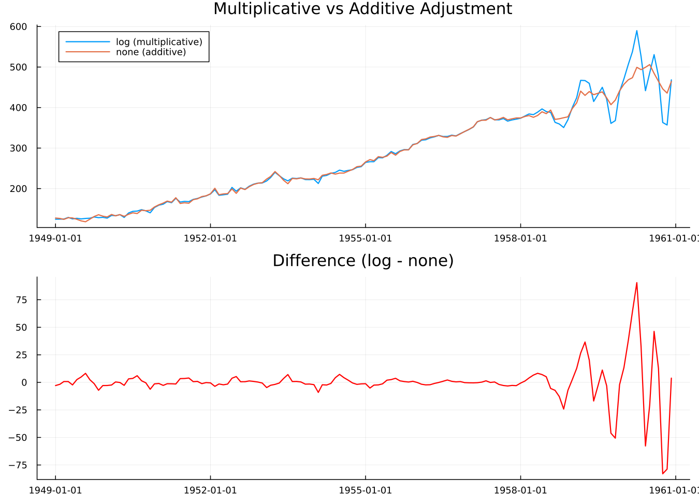
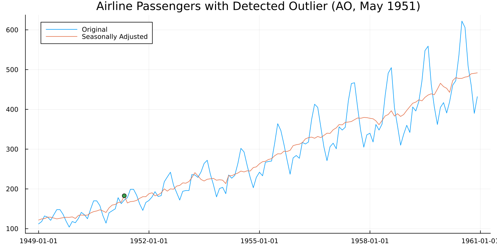

4. When the Defaults Aren't Enough
Three settings account for most of what you'll ever change. This chapter takes them one at a time and then puts them together.
Multiplicative or additive
Look again at Figure 2.1. The summer peak in 1960 is much larger in absolute terms than the one in 1949. But as a proportion of that year's level, the two are similar. July is roughly 20% above the year's average in both.
That distinction is the whole question. When the seasonal swing grows with the level of the series, the pattern is multiplicative and the model belongs in logs. When the swing stays a constant number of units regardless of level, it's additive.
X-13 tests this for you when asked (transform = :auto, as in chapter 3's res):
transformfunction(res):logLog, meaning multiplicative. To see why it matters, force the other choice:
d = dataset("airline")
res_log = x13(d; transform = :log)
res_none = x13(d; transform = :none)
Figure 4.1. The two adjusted series, and their difference. Early in the sample they're close. Late in the sample, where the seasonal swing is largest, they separate. The additive version removes a constant-sized summer effect from years where the actual effect was much larger, and leaves visible seasonality behind.
Leave transform at its default unless you have a reason. The reasons that do come up: a series containing zero or negative values cannot be logged, and X-13 will pick :none for you; and if you're comparing across a series break or reproducing someone else's published figures, you may need to pin the choice rather than let it be re-tested each period.
Outliers
A strike, a policy change, a pandemic. A single unusual observation distorts the estimated seasonal pattern for that calendar month in every year, because the seasonal factor for July is estimated from all the Julys.
Detection is off by default:
res = x13(dataset("airline"); outlier = true)
outliers(res)On the airline series with the fuller specification above, one is found:
| label | type | year | period |
|---|---|---|---|
AO1951.May | :ao | 1951 | 5 |
An additive outlier in May 1951, one month, no lasting effect.
Worth noticing: the values around it are 163, 172, 178. Nothing about that looks unusual. Detection works on regARIMA residuals after differencing, not on levels, so it finds things the eye does not.
plot(res; outliers = true)
outlier_counts(res)
Figure 4.2. The adjustment with the detected outlier marked.
Three types are detected automatically. An additive outlier (AO) is a single odd observation. A level shift (LS) is a permanent step to a new level. A temporary change (TC) is a jump that decays back. outlier_counts gives how many of each were found.
One caution that applies everywhere and is easy to forget. Automatic detection near the end of a series is unreliable, because there isn't yet enough data after the event to distinguish a temporary blip from a permanent shift. A level shift detected in the most recent few months should be treated as provisional.
Calendar effects
Months contain different numbers of Mondays. A series driven by business activity will be higher in a month with five Mondays than one with four, and this has nothing to do with the season.
res = x13(dataset("airline"); trading = true, transform = :log)Or let X-13 decide whether the effect is there at all:
res = x13(dataset("airline"); aictest = [:td, :easter], transform = :auto)aictest fits the regressors, compares information criteria with and without, and keeps them only if they earn their place. On the airline series both are kept, and the trading-day F-test is emphatic:
F(1, 128) = 31.06, p = 1.4e-7Easter is the other built-in worth knowing. It moves between March and April, so its effect splits across two months in a way that changes every year, and a fixed seasonal factor cannot absorb it. Easter[1] in the output means a one-day window before Easter Sunday.
X-13 has built-in regressors for Easter, Labor Day and Thanksgiving. All three are US holidays. For Diwali, Chinese New Year, Eid, or anything else, this package provides custom_holiday_regressor and a calendar layer; chapter 5 points the way.
Choosing the ARIMA model
X-13 can search for the model rather than being told one:
res = x13(dataset("airline"); automdl = true, transform = :auto)
arima_model(res)"(0 1 1)(0 1 1)"This is worth a remark. (0 1 1)(0 1 1) is the model Box and Jenkins fitted to this series by hand in 1970. It's so closely associated with it that the specification is called the airline model, and it remains the default starting point for monthly economic series across the profession. X-13's automatic procedure arrives at it independently.
To see what it considered and rejected:
fivebestmdl(res)5-element Vector{@NamedTuple{model::String, bic::Float64}}:
(model = "(0 1 0)(0 1 1)", bic = -4.007)
(model = "(1 1 1)(0 1 1)", bic = -3.986)
(model = "(0 1 1)(0 1 1)", bic = -3.979)
(model = "(1 1 0)(0 1 1)", bic = -3.977)
(model = "(0 1 2)(0 1 1)", bic = -3.97)fivebestmdl returns the five best candidates with their BIC values, in rank order. Useful when the chosen model surprises you (notice (0 1 1)(0 1 1) isn't even the top BIC here — automdl weighs more than raw BIC when picking among close candidates), and useful for judging how decisive the choice was: five candidates within a hair of each other means the selection is close to arbitrary.
If all you want is the order, without the adjustment:
select_order(dataset("airline"))(order = (3, 1, 1), seasonal_order = (0, 1, 1, 12), transform = :none)Note this is a different model from the one above — select_order runs automdl on its own, with no aictest/transform requested, so it searches under different conditions than chapter 3's fuller res.
Putting it together
res = x13(dataset("airline");
automdl = true,
outlier = true,
aictest = [:td, :easter],
transform = :auto)This is the specification behind every verified number in this guide (the same one chapter 3 introduced).
The diagnostics, all independently verified against this exact call:
| Diagnostic | Value | Verdict |
|---|---|---|
| Transform | Log(y) | multiplicative |
| ARIMA model | (0 1 1)(0 1 1) | the airline model |
| Q | 0.20 | pass |
| M7 | 0.203 | identifiable seasonality |
| Failed M statistics | 0 | pass |
| QS, original | 167.65, p = 0.000 | seasonality present |
| QS, adjusted | 0.00, p = 1.000 | seasonality removed |
| Durbin-Watson | 1.95 | no residual autocorrelation |
| Outliers found | 1 (AO, May 1951) |
Freezing the result
Automatic selection is convenient during exploration and a liability in production. Next month's data may change the chosen model, and your published figures will move for reasons that have nothing to do with the economy.
frozen = static(res)static returns a specification with every automatic choice resolved: the ARIMA order fixed, detected outliers listed explicitly, the transform pinned. Run that specification from then on and the model stops moving underneath you.
One caveat the docstring covers and is worth repeating. Re-running a frozen specification reproduces the original to about six significant figures, not bit-identically, because estimation converges slightly differently when a model is given rather than searched for. Compare with isapprox, not ==.
Everything else
These settings cover most cases. The rest of what X-13 can do runs to 280 pages of Census Bureau documentation.
Some of it is reachable through named keywords, and the API reference lists them. Anything without a named keyword goes through spec_args, which passes raw "block.argument" pairs straight to the specification file:
res = x13(dataset("airline");
spec_args = Dict("forecast.maxlead" => "12"))That escape hatch means the package never blocks you from something X-13 can do.